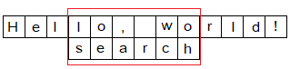
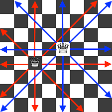
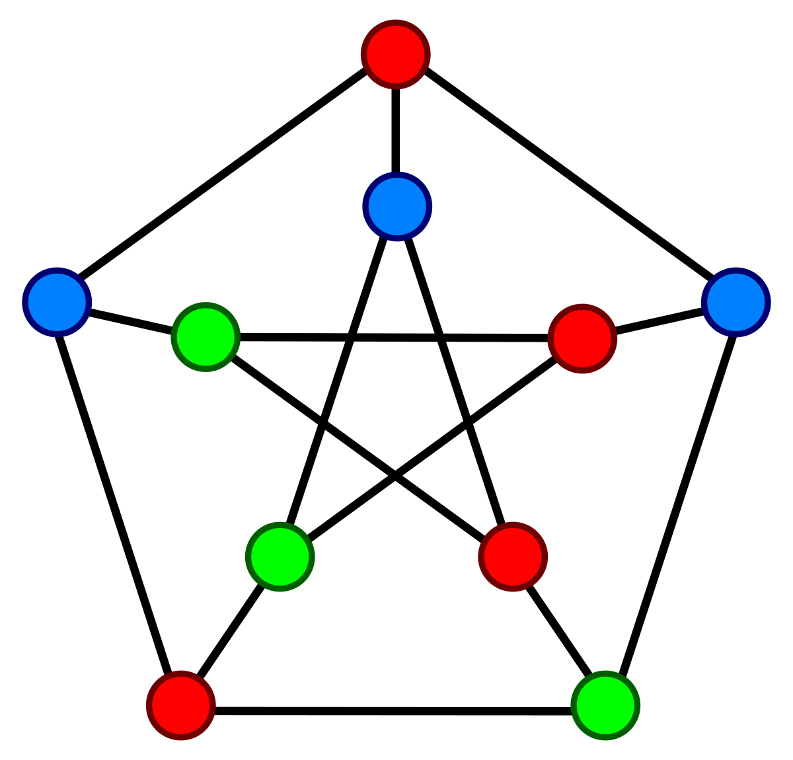

Задача возведения числа $a$ в неотрицательную степень $n$.
Алгоритм решения "в лоб". По определению $a^n = \underbrace{a \cdot a \cdot \ldots \cdot a}_\textrm{n}$
Из определения следует простейший алгоритм
def code(a, n):
pow = 1
for i in range(n):
pow = pow * a
return pow
$T_{pow}=O(n)$
Примеры алгоритмов, основаные на методе грубой силы
Поиск подстроки $p$ в строке $s$ методом грубой силы:

def strcmp(s, p):
n = len(s)
m = len(p)
for i in range(n - m):
j = 0
while j < m and s[i + j] == p[j]:
j = j + 1
if j == m:
return i
return None
$T_{strcmp}=O(n*m)$
Задача. Во множестве из n точек необходимо найти две, расстояние между которыми минимально (точки ближе других друг к другу)
Координаты всех точек известны: $P_i = (x_i, y_i)$
Расстояние $d(i, j)$ между парой точек вычисляется как евклидово:
$d(i, j) = \sqrt{(x_i – x_j)^2 + (y_i – y_j)^2}$
import math
def SearchClosestPoints(x, y):
dmin = float("inf")
(imin, jmin) = (None, None)
for i in range(len(x)):
for j in range(i + 1, len(x)):
d = math.sqrt((x[i] - x[j])**2 +(y[i] - y[j])**2)
if d < dmin:
dmin = d
imin = i
jmin = j
return (imin, jmin)
Какова вычислительная сложность алгоритма?
$T=O(n^2)$
“Жадный” алгоритм (Greedy algorithms) — алгоритм, принимающий на каждом шаге локально-оптимальное решение.
Предполагается, что конечное решение окажется оптимальным.
Примеры “жадных” алгоритмов:
Имеется неограниченное количество монет номиналом (достоинством) $a_1 < a_2 < \ldots < a_n$
Выдать сумму $S$ наименьшим числом монет
Имеются монеты достоинством 1, 2, 5 и 10 рублей. Выдать сумму $S = 27$ рублей
2 монеты по 10 руб., 1 по 5, 1 по 2.
На каждом шаге берётся наибольшее возможное количество монет достоинства $a_n$ (от большего к меньшему)
Имеются монеты достоинством 1, 5 и 7 рублей. Выдать сумму $S = 24$ рублей
3 по 7, 3 по 1 = 6 монет.
2 по 7, 2 по 5 = 4 монеты.
ДинамикаДеревья Хаффмана (Huffman) и коды Хаффмана используются для сжатия информации путем кодирования часто встречающихся символов короткими последовательностями битов
Предложен Д. А. Хаффманом в 1952 году (США, MIT)
множество символов и известны вероятности их появления в тексте (в файле)
$A = \{a_1, a_2, \ldots, a_n\}$ – множество символов (алфавит)
$P = \{p_1, p_2, \ldots, p_n\}$ – вероятности появления символов
каждому символу сопоставить код – последовательность битов (codeword):
$С(A, P) = \{c_1, c_2, \ldots, c_n\}$
На каждом шаге осуществляется “жадный выбор” – выбираем два узла с наименьшими вероятностями
Поиск с возвратом (Backtracking) – метод решения задач, в которых необходим полный перебор всех возможных вариантов в некотором множестве М
“Построить все возможные варианты …”, “Сколько существует способов …”, “Есть ли способ …”
Термин Backtrack введен в 1950 г. D. H. Lehmer
Примеры задач
def backtracking(int step):
save_variant()
if is_solution_found():
print_solution()
quit()
for variant in variants:
if is_correct_variant():
backtracking(step + 1)
delete_variant()
backtracking(1)
| 6 | 9 | |||||||
| 1 | 1 | |||||||
| 1 | 1 | 1 | 1 | 1 | 1 | 1 | 1 | 1 |
| 1 | 0 | 0 | 0 | 0 | 0 | 1 | 1 | 1 |
| 1 | 0 | 0 | 1 | 1 | 0 | 0 | 0 | 1 |
| 1 | 1 | 0 | 0 | 0 | 0 | 1 | 0 | 1 |
| 1 | 0 | 0 | 1 | 0 | 1 | 1 | 0 | 1 |
| 1 | 1 | 1 | 1 | 0 | 1 | 1 | 1 | 1 |
| 6 | 9 | |||||||
| 1 | 1 | |||||||
| 1 | 1 | 1 | 1 | 1 | 1 | 1 | 1 | 1 |
| 1 | 2 | 2 | 2 | 2 | 2 | 1 | 1 | 1 |
| 1 | 0 | 0 | 1 | 1 | 2 | 0 | 0 | 1 |
| 1 | 1 | 0 | 0 | 2 | 2 | 1 | 0 | 1 |
| 1 | 0 | 0 | 1 | 2 | 1 | 1 | 0 | 1 |
| 1 | 1 | 1 | 1 | 2 | 1 | 1 | 1 | 1 |
Классическая формулировка
Расставить на стандартной 64-клеточной шахматной доске 8 ферзей (королев) так, чтобы ни один из них не находился под боем другого
Задача впервые была решена в 1850 г. Карлом Фридрихом Гаубом (Carl Friedrich Gaub)
Число возможных решений на 64-клеточной доске: 92
Имеется граф $G = (V, E)$ состоящий из $n$ вершин
Каждую вершину надо раскрасить в один из $k$ цветов так, чтобы смежные вершины были раскрашены в разные цвета
Пример раскраски 10 вершин графа в 3 цвета
Локальный поиск (Local search) – это метод приближенного решения оптимизационных задач
Жертвуем точностью решения для сокращения времени работы алгоритма
Примеры методов локального поиска
def LocalSearch():
x = InitialSolution()
xn = GenerateNewSolution(x)
if F(xn) < F(x):
x = xn
while not ExitCondition(x, xn):
xn = GenerateNewSolution(x)
if F(xn) < F(x):
x = xn
return x
Introduction to the Design and Analysis of Algorithms
(c) Anany Levitin